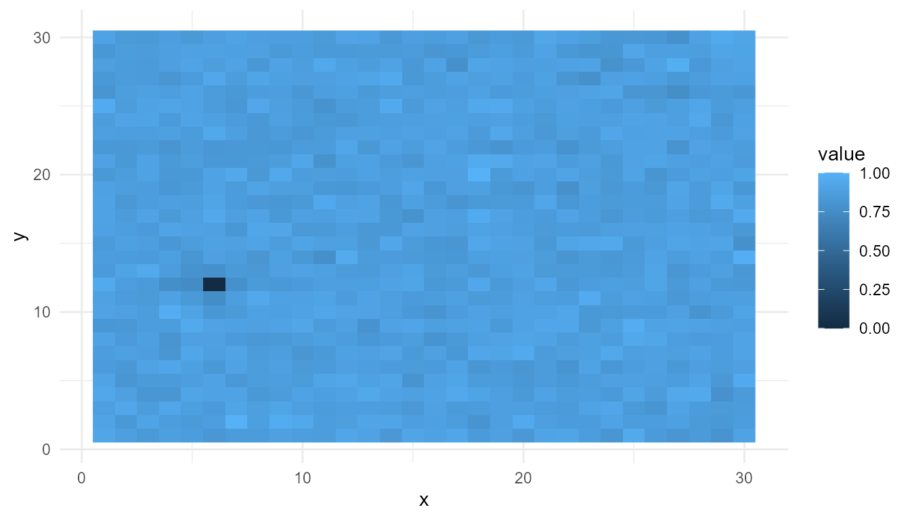

Purpose
This article explains self-organization as a major mechanism of emergence. Self-organization occurs when order, structure, or pattern develops through internal system dynamics rather than through external design or centralized control (Prigogine and Stengers 1984; Kauffman 1993; Mitchell 2009).
The purpose of this chapter is to show how local interactions,
feedback, diffusion, and repeated updating can generate large-scale
organization. In emergenceModelR, this idea is represented
by simulate_self_organization(), a simplified grid model
that allows learners to observe how spatial structure can arise from
distributed dynamics.
The guiding question is:
How can order arise in a system without a central organizer?
What is self-organization?
Self-organization refers to the spontaneous formation of pattern or structure through the interactions of a system’s own components. The word “spontaneous” does not mean random or unexplained. It means that the organization is not imposed from outside by a central controller.
In a self-organizing system, the global pattern arises because many local units influence one another over time. No single component contains the complete pattern. No part of the system needs a blueprint of the final form. Instead, the pattern emerges through repeated interaction.
Examples often discussed in complexity science include:
- chemical pattern formation;
- convection cells;
- biological morphogenesis;
- flocking and swarming;
- ant-colony organization;
- ecosystem dynamics;
- market coordination;
- neural synchronization.
These examples differ greatly in their physical details, but they share a general logic: local interactions produce system-level order.
Self-organization and emergence
Self-organization and emergence are closely related, but they are not identical.
Emergence refers to the appearance of system-level patterns or properties arising from lower-level interactions.
Self-organization refers to one process by which such patterns arise: the system organizes itself through internal dynamics.
In this sense, self-organization can be understood as a mechanism of emergence. Emergence describes the relationship between levels. Self-organization describes how order can form without centralized control.
| Concept | Main emphasis | Example question |
|---|---|---|
| Emergence | System-level patterns arising from local interactions | What global pattern appears? |
| Self-organization | Formation of order through internal dynamics | How does the system organize itself? |
| Complexity | Many interacting parts with nonlinear dynamics | Why is the system difficult to predict? |
simulate_self_organization() focuses on the second
question: how distributed local updating can produce spatial order.
Conceptual background
Self-organizing systems are often composed of many interacting parts. The parts may be molecules, cells, organisms, agents, nodes, or spatial locations in a grid. Each part follows relatively simple rules, but the repeated application of those rules can produce large-scale organization.
Three concepts are especially important:
- Local interaction: each part responds to nearby conditions rather than to the whole system.
- Feedback: current states influence future states, sometimes amplifying differences.
- Constraint: system structure, boundaries, and environmental conditions limit what patterns can form.
The key point is that order can arise from dynamics. The system does not need to be externally arranged into the final pattern. Instead, structure develops through the way the system changes over time.
Feedback and diffusion
Two important mechanisms in many self-organizing systems are feedback and diffusion.
Feedback occurs when the current state of a system influences its future state. Positive feedback amplifies local differences. Negative feedback stabilizes or limits change.
Diffusion spreads or smooths local variation. In physical and biological systems, diffusion may involve the movement of heat, chemicals, organisms, information, or influence across space.
Complex patterns often arise from the tension between amplification and smoothing. Feedback can intensify local structure. Diffusion can spread that structure outward or reduce sharp differences.
This interaction is central to many pattern-forming systems. If feedback dominates completely, the system may become unstable or overly concentrated. If diffusion dominates completely, the system may become too uniform. Interesting patterns often appear between these extremes.
Non-equilibrium order
Self-organization is often associated with systems far from equilibrium. In equilibrium, differences tend to disappear and the system becomes stable or uniform. Far from equilibrium, flows of energy, matter, or information can maintain organized structure (Prigogine and Stengers 1984).
This is important for life and complexity. Living systems are not passive equilibrium structures. They maintain organization through continuous flows: energy, nutrients, waste, signals, and regulation. Self-organization provides one way to think about how order can be maintained in dynamic systems.
The simplified model in this package does not simulate real thermodynamics. However, it illustrates the general idea that repeated updating and interaction can generate structured outcomes.
Relation to the package
simulate_self_organization() represents
self-organization in a simplified spatial grid. Each grid cell has a
numeric value. Over time, values change through local updating
influenced by diffusion and feedback.
| Theoretical concept | Package representation |
|---|---|
| Spatial system | Grid |
| Local state | Cell value |
| Local interaction | Updating based on nearby values |
| Diffusion | Smoothing/spreading parameter |
| Feedback | Amplification/reinforcement parameter |
| System evolution | Repeated time steps |
| Emergent pattern | Final spatial distribution |
The model is not intended to represent a specific chemical or biological system. It is an educational abstraction for exploring how local updating can generate global pattern.
Simulation example
so <- simulate_self_organization(
grid_size = 30,
steps = 50,
diffusion = 0.20,
feedback = 0.60,
seed = 2
)
final_step <- subset(so, step == max(step))
plot_emergence_sim(
final_step,
x = "x",
y = "y",
value = "value",
type = "raster"
)
Interpretation
The final spatial pattern was not drawn directly. It emerged from repeated local updating. Each grid cell changed according to the model rules, and the system-level structure appeared through iteration.
This illustrates a central lesson of self-organization:
Global order can arise from local dynamics without a central organizer.
The resulting pattern should not be interpreted as a real chemical or biological structure. It is a teaching model that makes the logic of pattern formation visible.
Feedback experiment
Feedback controls how strongly local values reinforce or amplify themselves. A low-feedback system may remain relatively smooth. A high-feedback system may develop stronger contrasts or more sharply defined patterns.
low_feedback <- simulate_self_organization(
grid_size = 30,
steps = 50,
diffusion = 0.20,
feedback = 0.20,
seed = 2
)
high_feedback <- simulate_self_organization(
grid_size = 30,
steps = 50,
diffusion = 0.20,
feedback = 0.80,
seed = 2
)
low_final <- subset(low_feedback, step == max(step))
high_final <- subset(high_feedback, step == max(step))
head(low_final)
#> step x y value
#> 44101 50 1 1 0.9292003
#> 44102 50 2 1 0.8440239
#> 44103 50 3 1 0.8434628
#> 44104 50 4 1 0.8772289
#> 44105 50 5 1 0.7632149
#> 44106 50 6 1 0.7272491
head(high_final)
#> step x y value
#> 44101 50 1 1 0.9157671
#> 44102 50 2 1 0.8882215
#> 44103 50 3 1 0.8461943
#> 44104 50 4 1 0.8824299
#> 44105 50 5 1 0.8849857
#> 44106 50 6 1 0.8433831Interpretation of feedback
Increasing feedback changes how strongly the system reinforces local variation. In theoretical terms, feedback can convert small differences into larger patterns.
This is important because many self-organizing systems depend on amplification. Small fluctuations may become meaningful if the system reinforces them. Without feedback, differences may fade. With too much feedback, the system may become unstable or dominated by extreme values.
Diffusion experiment
Diffusion controls how strongly values spread or smooth across the grid. A low-diffusion system may preserve local variation. A high-diffusion system may become more uniform.
low_diffusion <- simulate_self_organization(
grid_size = 30,
steps = 50,
diffusion = 0.05,
feedback = 0.60,
seed = 2
)
high_diffusion <- simulate_self_organization(
grid_size = 30,
steps = 50,
diffusion = 0.50,
feedback = 0.60,
seed = 2
)
low_diff_final <- subset(low_diffusion, step == max(step))
high_diff_final <- subset(high_diffusion, step == max(step))
head(low_diff_final)
#> step x y value
#> 44101 50 1 1 0.9399663
#> 44102 50 2 1 0.8885396
#> 44103 50 3 1 0.8772434
#> 44104 50 4 1 0.9123155
#> 44105 50 5 1 0.8859630
#> 44106 50 6 1 0.8498029
head(high_diff_final)
#> step x y value
#> 44101 50 1 1 0.8964865
#> 44102 50 2 1 0.8573359
#> 44103 50 3 1 0.7977402
#> 44104 50 4 1 0.8255652
#> 44105 50 5 1 0.8415497
#> 44106 50 6 1 0.8069405Interpretation of diffusion
Diffusion spreads local influence across space. It can smooth differences, connect nearby regions, and prevent purely isolated behavior.
In many self-organizing systems, diffusion interacts with feedback. Feedback amplifies. Diffusion spreads or smooths. Pattern formation often depends on the balance between the two.
This balance is a key theoretical insight: order does not arise simply because a system has many parts. It arises because the interactions among parts have the right structure.
Measuring the resulting pattern
Visual inspection is useful, but simple metrics can help compare
outputs. The function measure_emergence() can summarize
diversity, entropy, or temporal change depending on the simulation
output.
measure_emergence(
so,
value_col = "value",
time_col = "step"
)
#> n unique_states shannon_entropy mean_value sd_value temporal_variability
#> 1 45000 44904 15.44541 0.8575966 0.1157707 0.07619026
#> mean_absolute_change
#> 1 0.01711786Metrics should be interpreted carefully. They do not fully define self-organization, but they provide a way to compare outcomes under different parameter settings.
Self-organization and life
Self-organization is important in origin-of-life research because early prebiotic systems may have developed structured dynamics before modern genetic control systems existed. Chemical networks, protocell-like compartments, autocatalytic cycles, and metabolic-like processes are often discussed in terms of self-organization (Kauffman 1993; Maynard Smith and Szathm’ary 1999).
This does not mean that self-organization alone explains life. Living systems involve heredity, metabolism, boundary maintenance, adaptation, and evolution. However, self-organization helps explain how structured dynamics may arise before fully developed biological systems.
In this sense, self-organization provides a conceptual bridge between chemistry and biology.
Self-organization and consciousness
Self-organization is also relevant to consciousness and cognitive science. Neural systems are not centrally controlled in a simple top-down manner. Patterns of activity can arise through distributed interactions among neurons, networks, body, and environment.
This does not mean that self-organization alone explains consciousness. However, it helps frame consciousness as a system-level phenomenon involving coordination, feedback, integration, and dynamic organization.
For this reason, emergenceModelR complements projects
such as lifesimulatoR and consciousnessModelR.
It provides a general modeling language for thinking about how organized
patterns arise in complex systems.
What the model captures
The function captures several important ideas:
- order can arise without central control;
- local interactions can generate global patterns;
- feedback can amplify small differences;
- diffusion can spread or smooth variation;
- pattern formation depends on parameter balance;
- simulation can reveal structure not obvious from the rules alone.
These features make the model useful for teaching self-organization as a mechanism of emergence.
What the model does not capture
The model is intentionally simplified. It does not represent:
- real chemical reaction-diffusion systems;
- biological morphogenesis in detail;
- ecological dynamics;
- thermodynamic energy flows;
- real neural self-organization;
- evolutionary adaptation;
- full origin-of-life dynamics.
It is a conceptual model, not a detailed scientific simulation.
Responsible interpretation
It is better to say:
The simulation illustrates self-organization-like pattern formation.
than:
The simulation proves how life or consciousness emerges.
It is better to say:
The model shows how feedback and diffusion can shape spatial structure.
than:
The model is a realistic biological system.
Careful language is important because self-organization is sometimes used too broadly. The purpose of the model is to clarify the concept, not to overstate it.
Educational use
This chapter can support several classroom or self-study questions:
- How does feedback affect pattern formation?
- How does diffusion affect spatial structure?
- What happens when feedback and diffusion are out of balance?
- Can order arise without a central controller?
- How does self-organization differ from random patterning?
- Why is self-organization relevant to life and consciousness?
- What would be needed to make the model more realistic?
These questions help learners understand self-organization as a dynamic process rather than a vague label.
Key takeaway
Self-organization is a mechanism by which order can arise through internal system dynamics. It does not require a central designer or controller. Instead, patterns form through local interaction, feedback, diffusion, and repeated updating.
simulate_self_organization() provides a simplified
educational model of this process. It helps learners explore how
distributed dynamics can generate structured outcomes, while preserving
the distinction between toy simulation and real-world complexity.